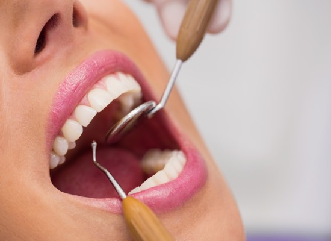
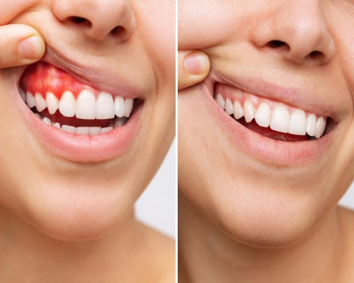

English
English
Periodontoloji - Diş Eti Hastalıkları - İstanbul
Atlantik Diş Kliniği - İstanbul
İstanbul diş eti iltihabı ve diş eti çekilmesi tedavisi
Sağlıklı ve estetik bir görüntüye sahip dişler için, sadece dişlerimizin sağlıklı olması yeterli değildir. Bunun yanında, dişin yer aldığı ve onun sağlıklı ve estetik görünmesini sağlayan; çene kemiği(alveol), dişi çene kemiğine bağlayan periodontal lifler ve diş etinin de sağlıklı olması gerekmektedir. Bu kapsamda, son yıllarda diş hastalıklarının yanında, diş eti hastalıkları yaşayanların sayısı da oldukça fazladır.
En yaygın ve en ciddi diş eti problemlerinden birisi de, diş eti iltihabıdır. Diş eti iltihabı, diş etlerinde enfeksiyona yol açan, oldukça bulaşıcı, tedavi edilmediği takdirde diş kayıplarının yanında, farklı türde başka hastalıklara da sebep olabilen, başta yetersiz ağız ve diş bakımı olmak üzere birçok farklı etmenin neden olduğu bir diş eti hastalığıdır. Tedavi edilmediğinde, diş kayıplarına kadar varan sonuçlar doğurmaktadır. Bu nedenle sağlıklı dişlere sahip olmanın yolunun, sağlıklı diş etlerinden geçtiğini söylemek yanlış olmaz.
Diş eti iltihabı nedir?
Diş eti iltihabı, dengesiz ve yetersiz beslenme, kişisel ağız ve diş bakımına dikkat edilmemesi ve bazı hastalıklar nedeniyle, diş etlerinde oluşabilen bir iltihabi hastalıktır. Bakteriyel enfeksiyon şeklinde gelişen bu hastalığın en önemli sebebi, gerekli şekilde düzenli ağız ve diş bakımının yapılmamasıdır.
Gerekli ağız ve diş bakımının yapılmadığı durumlarda; renksiz, yapışkan ve ince bir film tabakası şeklinde, dişlerde ve diş etleri üzerinde patojen bakterilerin oluşturduğu, bakteri plağı denilen yapı oluşur. Diş çürüklerinin yanı sıra, diş eti hastalıklarının da ana sebebi bu yapıdır. Bu bakteri plağında yer alan bakterilerin, asidik ve toksik yapıda maddeler üretmeleri sonucunda, dişin alt kısmında diş eti şişmesi, kızarması ve kanama gibi durumlar meydana gelmesi durumuna, diş eti iltihabı denir. Diş eti iltihabının, ihmal edilmeden hemen tedavi edilmesi gereklidir. Yoksa daha ileriki aşamalarda, daha ciddi bir diş hastalığı olan, diş eti çekilmesi(periodontitis) ve akabinde diş kaybı problemlerinin ortaya çıkmasına neden olacaktır. Bu nedenle, diş eti iltihabı ihmal edilecek bir hastalık değildir.
2.Diş eti iltihabı belirtileri nelerdir?
Sağlıklı bir diş eti pembe renkli, mat, sert ve sıkı bir yapı göstermektedir. Diş eti iltihabı sonucunda, bu yapı bozulmakta ve aşağıdaki durumlar oluşmaktadır.
- Ağız kokusu ve ağızda kötü tat oluşumu
- Sert bir şey yenildiğinde ya da kendiliğinden oluşan diş eti kanaması
- Diş fırçalama ve diş ipi kullanımı esnasında dişlerin kanaması
- Diş etlerinin kızarması
- Diş etlerinin çekilmesi
- Diş etinde soğuk ve sıcak hassasiyeti oluşumu
- Diş eti şişmesi ve kabarması
- Konuşma ve çiğneme sırasında ağrı ve sızı oluşumu
- Dişlerde, kırmızı mor biçimde renk değişimi
- Kızaran diş etleri üstünde ya da damak ve dudak içinde iltihaplar
- Dişlerin sallanması, düşmesi ve aralanması
Bu belirtilerin görülmesinden sonra, diş eti iltihabı tedavi edilmezse, tüm dokuları etkileyerek, daha ciddi diş ve doku kayıplarına sebep olabilmektedir.
3.Diş eti iltihabının nedenleri?
Tüm iltihaplı hastalıkların temelinde, mikroorganizmalar vardır. Bu kapsamda bakteri plağı, diş eti iltihabının birincil nedenidir. Bu bakteri plağı, diş ve diş etleri üzerinden uzaklaştırılmadığı sürece, diş eti iltihabının oluşma ihtimali yüksektir. Aşağıda, diş eti iltihabına neden olan bazı etmenler sıralanmıştır.
a) Ağız ve diş bakımı
Diş eti iltihabının başlıca ve en sık görülen nedeni, ağız ve diş bakımının yeterli düzeyde yapılmamasıdır. Ağız içinde yer alan bakteriler, gıdalarla birleşerek diş ve diş eti yüzeyinde renksiz, ince, yapışkan bir yapıya sahip olan bakteri plağını oluştururlar. Bu bakteri plağı, günlük düzenli bir şekilde yapılacak diş fırçalama, diş ipi kullanımı gibi ağız ve diş bakımı uygulamaları ile uzaklaştırılmazsa, zaman içerisinde diş eti iltihabına yol açar. Daha ileri aşamalarda, bu bakteri plağı temizlenmezse, diş eti çizgisi üzerinde sertleşmeye başlar ve diş taşı (tartar) oluşur. Bakteri plağı ve diş taşının, diş ve diş eti üzerinde kalma süresi uzadıkça, bakterilerin etkisi ile diş etlerinde tahribat olur ve iltihaplanma meydana gelir. Diş etleri kızarır, şişer ve kanamaya başlar. Bu durum tedavi edilmediğinde, diş eti çekilmesine ve diş kaybına neden olur.
b) Sigara kullanımı
Sigara kullanan kişilerde diş eti iltihabının görülmesi, kullanmayanlara göre daha fazladır.
c) Kronik hastalıklar
Şeker, HIV, kanser gibi kronik hastalıkları olan hastalarda dis eti iltihabi görülme ihtimali daha yüksektir.
d) Sağlıksız ve dengesiz beslenme
Sağlıksız bir beslenme sonucunda, dişlerde ve diş etlerinde hastalıklar oluşabilmektedir. Örneğin C vitamini; zayıf diş etlerini daha sağlam ve güçlü hale getirerek, diş etlerinin bakteri enfeksiyonlarına karşı daha dirençli olmasını sağlar.
e) Hormonal değişimler
Hamilelik, ergenlik, menopoz dönemlerinde yaşanan hormonal değişimler, diş eti hassasiyetini arttırarak, diş eti iltihabının oluşması riskinin yükseltir.
f) Stres
Aşırı ve devamlı yaşanan stres, kişinin bağışıklık sistemini zayıflatarak, diş eti hassasiyetini arttırır ve diş eti iltihabının oluşması ihtimalini yükseltir.
g) Yaş
Yaşın artmasıyla birlikte, diş eti iltihabının oluşma ihtimalide artar.
h) İlaç kullanımı
Bazı ilaçlar, diş eti dokusunun hassasiyetini arttırarak, dis eti iltihabi oluşmasını kolaylaştırmaktadır.
ı) Genetik yatkınlık
Ailede, diş eti hassasiyeti olan bireylerin olması durumunda, genetik olarak diş eti hassasiyeti ve diş eti iltihabı problemi yaşama durumunuz söz konusu olabilir.
4. Diş eti hastalıkları türleri nelerdir?
Diş eti hastalıkları, çoğu zaman fark edilmeyen veya çok ciddiye alınmayan sağlık problemleridir. Diş etlerinde, kendiliğinden ya da sert bir maddenin etkisi ile meydana gelen kanamalar, bu hastalıkların ilk ve en önemli belirtisidir. Diş eti hastalıkları, temelde gingivitis ve periodontitis olarak iki kısma ayrılır.
5. Diş eti hastalıkları nasıl tedavi edilir?
Diş eti hastalıklarının, erken teşhisi ve erken müdahale edilmesi, ağız ve diş sağlığı açısından son derece önemlidir. Böylece hastalık çok daha ileri ve geri dönülmesi imkânsız noktalara varmadan ortadan kaldırılmış olacaktır. Diş eti iltihabı tedavisinde, hastanın durumuna göre diş hekimi tarafından bir yol haritası ve tedavi belirlenir. Diş eti hastalığı tedavilerinde ana hedef, hastalığın ana neden olan, diş eti iltihabı enfeksiyonunu, diş etlerinden uzaklaştırmaktır.
Uygulanacak tedavi yöntemi ya da yöntemleri, hastalığın boyutu, yapılmışsa daha önceki tedaviler ve hastanın genel sağlık durumu dikkate alınarak belirlenir. Hastalığın başlangıç evresinde mi yoksa ileri safhalarda mı olup olması durumuna göre; cerrahi olmayan tedavi uygulamalarından, cerrahi tedavi uygulamalarına kadar birçok farklı tedavi yöntemi gerekebilmektedir.
Hastanın durumuna göre, başlangıç seviyesinde bir enfeksiyon durumu söz konusu ise antibiyotik kullanımı ve diş taşı temizliği tedavisi yapılır. Diş yüzeyindeki, diş taşı ve bakteri plağı temizlenerek, enfeksiyona neden olan bakteriler ortamdan uzaklaştırılır. Böylece, diş etleri tekrar dişlere bağlanır, sağlıklı renk yapısına kavuşur ve ileri derecede doku hasarı önlenmiş olur.
Eğer çok daha ileri seviyelerde bir enfeksiyon durumu söz konusu ise, cerrahi bir müdahalenin yapılması gerekebilir Bu durumda, diş etinin açılması, doku kaybının giderilmesi gibi cerrahi müdahaleler uygulanır.
Bu belirtilerin görülmesinden sonra, diş eti iltihabı tedavi edilmezse, tüm dokuları etkileyerek, daha ciddi diş ve doku kayıplarına sebep olabilmektedir.
İstanbul periodontoloji sık sorulan sorular
Diş eti hastalıklarından biri olan ve diş eti dışındaki dokularda henüz bir hasarın oluşmadığı gingivitis, kısa sürede tamamen tedavi edilebilmektedir. Ancak diş eti dışında, diğer dokulara da yayılma gösteren periodontitiste ise, hasar gören dokuların genelde tamamen eskisi gibi olması sağlanamamaktadır. İleri seviyede doku kaybının olduğu periodontitiste, cerrahi müdahale ve çeşitli ilaçlarla hasar gören dokuların eski haline getirilmesi işlemleri uygulanabilmektedir. Bu tedaviler daha uzun süre içerisinde gerçekleştirilir. Genel olarak diş eti hastalıkları, hastalığın evresine göre 1 ay ile 1 yıl arasında değişen sürelerde tedavi edilebilmektedir
Başlangıç seviyesinde olan diş eti hastalıklarının zamanında tedavi edilmemesi durumunda diş, diş eti, çene kemiği ve bağ dokularda hasara yol açarak diş eti çekilmesine, dişlerin sallanmasına ve diş kayıplarına yol açar. Tedavi edilmeyen diş eti iltihabının, tekrarlaması durumu söz konusudur. Yapılan bilimsel çalışmalarda, diş eti iltihabına neden olan bakterilerin, kan dolaşımına geçerek akciğer, kalp gibi organları etkileyebileceği bildirilmiştir.
Diş eti hastalıklarını önlemenin en önemli yolu, kişisel ağız ve diş bakımının günlük olarak düzenli bir şekilde yapılmasıdır. Bu kapsamda;
- Günde en az iki kez dişler doğru şekilde fırçalanmalı
- Diş aralarının temizliğinde, mutlaka diş ipi kullanılmalı
- Antibakteriyel ağız gargaraları kullanılmalı
Bunların dışında;
- Diş temizliğinin, yılda en az 1 kez yapılması
- Rutin diş muayenesi kontrollerinin 6 ayda bir aksatılmadan yapılması
işlemleri, diş eti iltihabını ve hastalıklarını önlemede son derece önemli tedbirlerdir.
Diş eti çekilmesi, ileri derecede diş eti iltihabı sonucunda ortaya çıkan ve diş köklerinin açığa çıktığı son derce ciddi bir diş eti hastalığıdır. Bu nedenle, gerekli diş eti tedavileri yapılmadan, diş eti çekilmesi sorununun eski konumuna gelmesi söz konusu değildir. Gerekli diş eti tedavilerinin uygulanması ile çekilen diş etleri tekrar eski konumlarına gelir